전 = 2단계 시작 직전 main(운영 화면), 후 = 2단계 브랜치. 캡처는 인터넷 없이 찍어서 글꼴이 대체 글꼴로 보일 수 있어요(미리보기 주소에서는 실제 글꼴).
눈에 보이는 눌러야 할 것(버튼·링크·펼침·입력): 휴대폰 첫 화면 49개 → 28개, PC 52개 → 31개 (node dev/design/count-buttons.mjs)
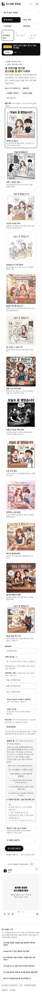
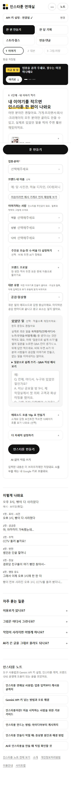
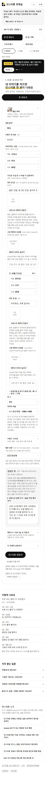
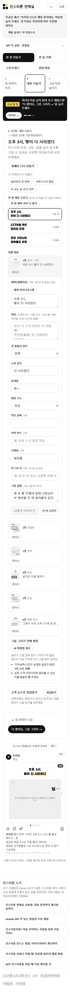
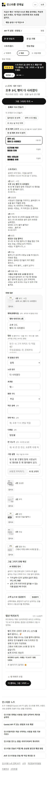
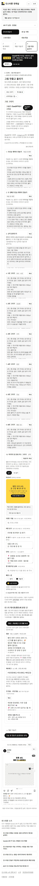
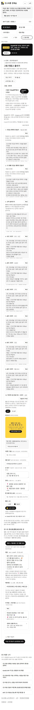
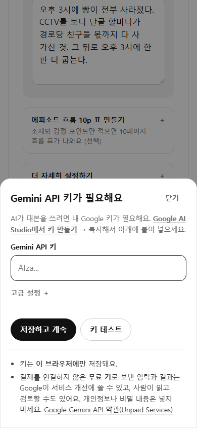
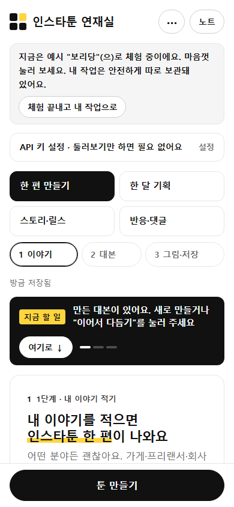
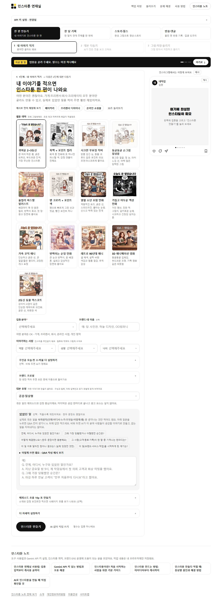
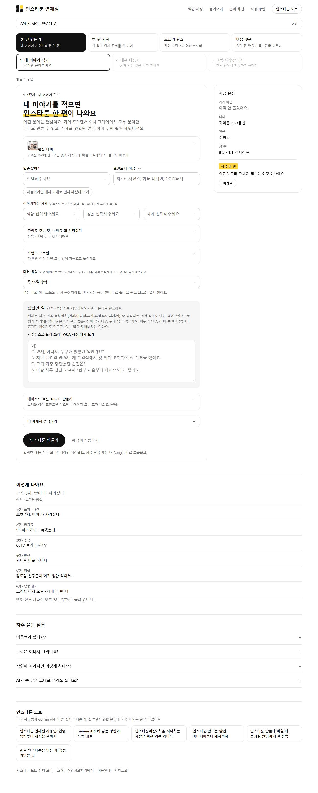
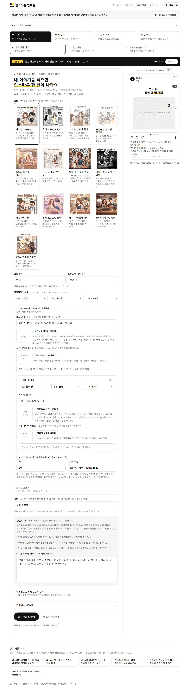
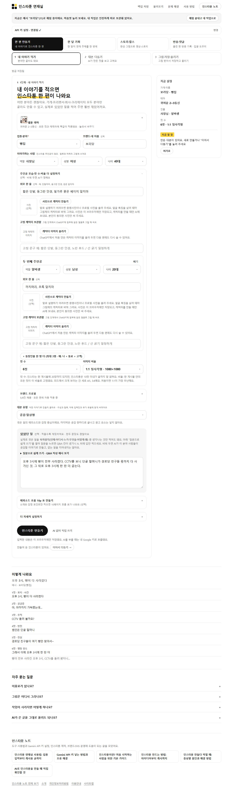
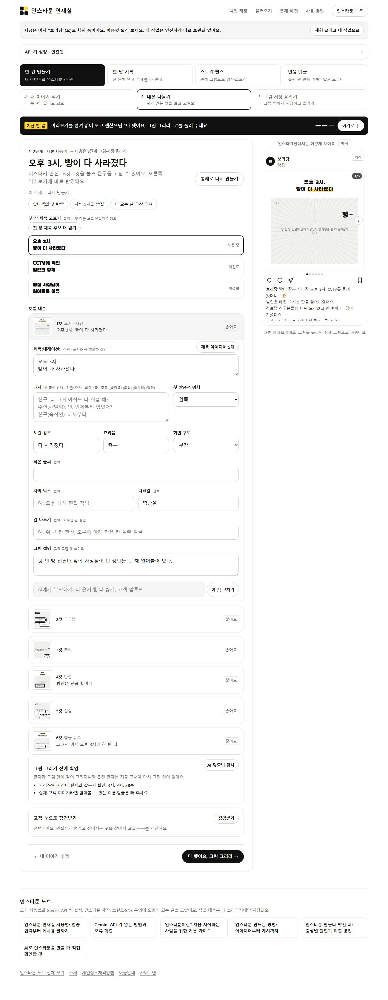
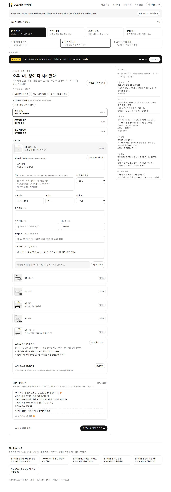
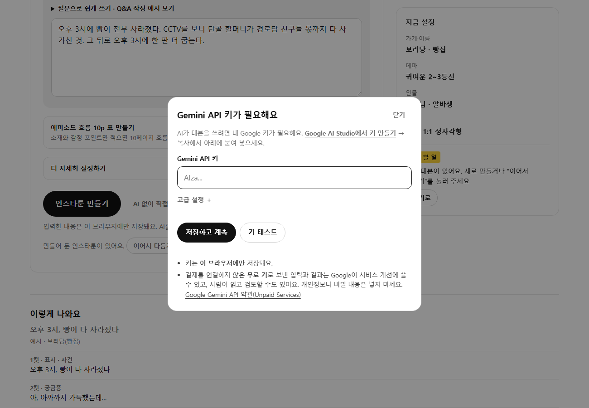